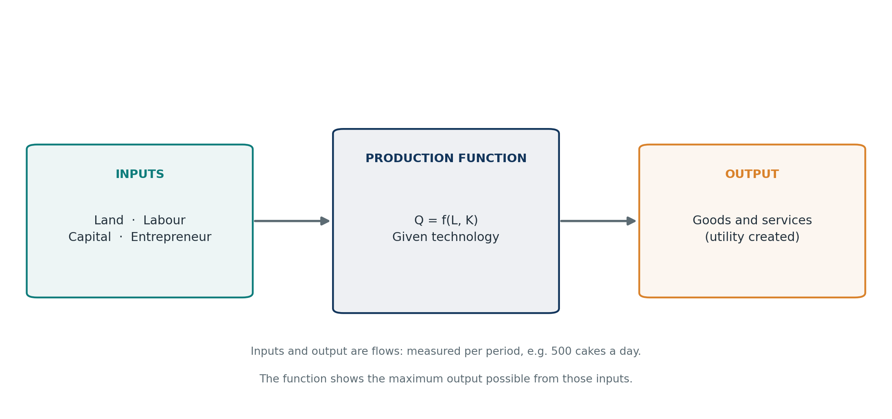
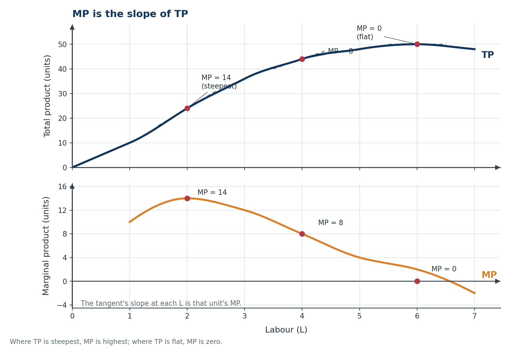
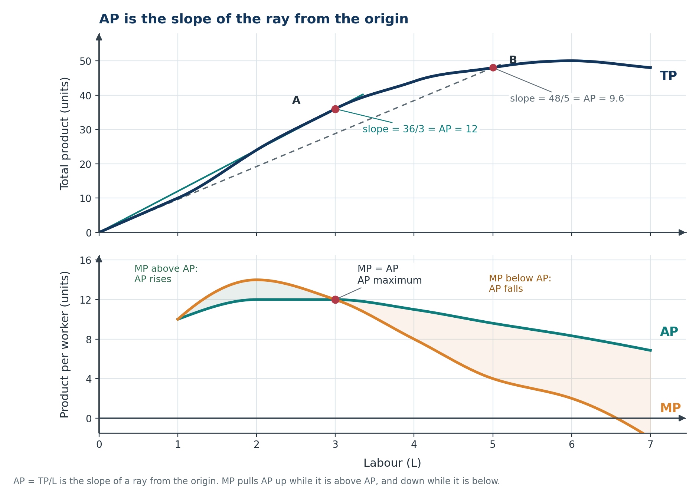
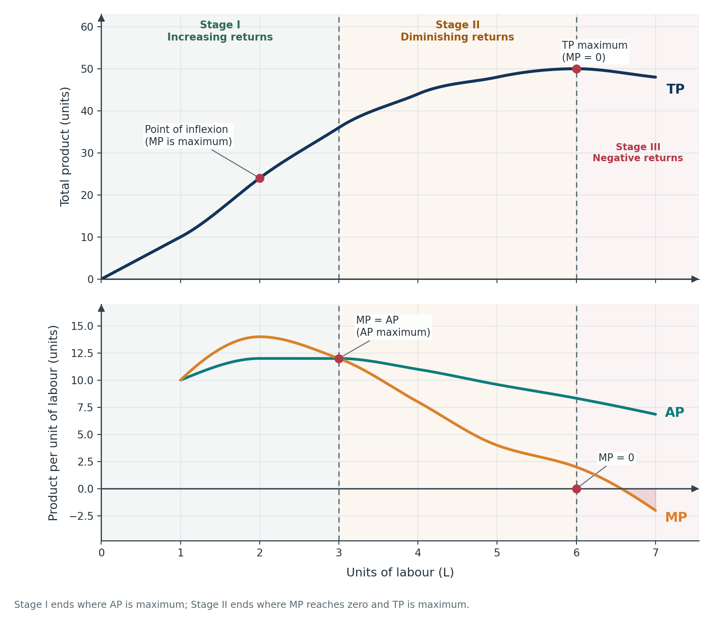
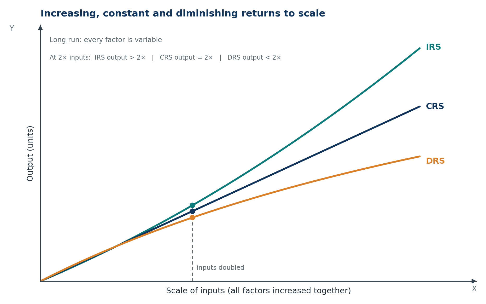
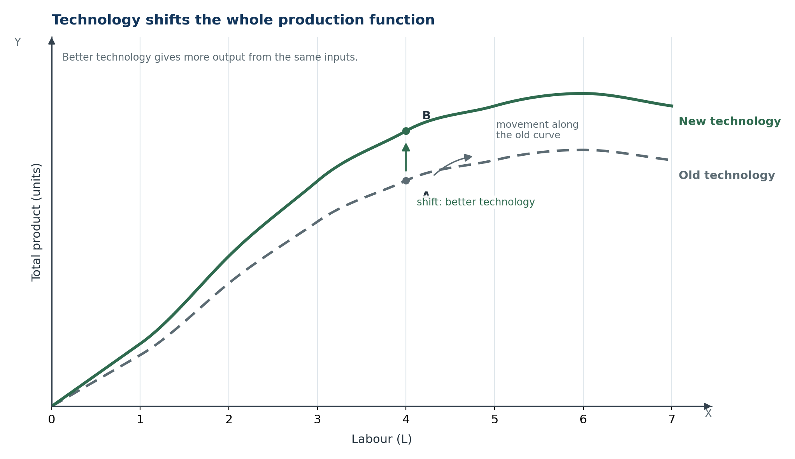

Microeconomics · Class 11Chapter 5Notes + quick revision
Production Function
A production function is the firm's technical recipe: it turns inputs into the maximum output possible. Add one variable factor to a fixed one and output passes through three stages; scale every factor together and the question becomes returns to scale.
Chapter at a glance
Nine stops: from what production means to the full TP–AP–MP table and the exam lines that decide marks. Tap a card to jump straight in.
The one-line idea: a production function is the technical recipe that turns inputs into output; in the short run one factor is fixed, and in the long run all factors can change.
The core question: how does output change when a firm adds more of one input, or scales up every input?
Key Terms — Read These First
The words that carry marks. Read them once now, then test yourself after the chapter.
- Production
- The process of creating utility by transforming inputs into output; it includes goods and services.
- Inputs
- The factors of production used to make output: land, labour, capital and entrepreneurship.
- Fixed factor
- An input whose quantity cannot be varied in the short run: building, machine, permanent staff.
- Variable factor
- An input whose quantity can be varied in the short run: raw material, casual labour, electricity.
- Short run
- A period in which at least one factor is fixed, so output changes only by changing variable factors.
- Long run
- A period in which all factors are variable, including plant size.
- Production function
- The technical relationship between physical inputs and the maximum output possible with a given technology.
- Technical efficiency
- Producing the maximum output from a given set of inputs; the production function is a technical benchmark.
- Total product (TP)
- Total output produced with a given number of variable inputs in a given period.
- Average product (AP)
- Output per unit of the variable factor: AP = TP ÷ L.
- Marginal product (MP)
- The addition to total product from one more unit of the variable factor: MP = ΔTP ÷ ΔL.
- Product schedule
- A table showing TP, AP and MP at each quantity of the variable factor.
- Law of variable proportions
- As more of a variable factor is added to fixed factors, MP first rises, then falls, then may become negative.
- Stage I
- Increasing returns to a factor; AP rises and ends at its maximum, where MP = AP.
- Stage II
- Diminishing returns to a factor; MP is positive but below AP, and TP reaches its maximum where MP = 0.
- Stage III
- Negative returns to a factor; MP is negative and TP falls.
- Point of inflexion
- The point where TP changes from increasing at an increasing rate to increasing at a decreasing rate; MP is maximum there.
- Returns to a factor
- The short-run change in output when one variable factor changes while others are fixed.
- Returns to scale
- The long-run change in output when all factors are changed in the same proportion.
- Increasing returns to scale
- Output rises more than proportionately when all inputs are scaled up.
- Constant returns to scale
- Output rises exactly in proportion when all inputs are scaled up.
- Diminishing returns to scale
- Output rises less than proportionately when all inputs are scaled up; output still rises.
- Technology
- The available technique of production; a better technology creates a new production function and shifts TP upward.
Production and the Inputs Used to Produce
The idea of this section. Production is not only making goods. It is any activity that creates utility, and the inputs used are classified by whether the firm can change them in the short run.
1.1 Meaning of production
Definition. Production is the process of creating utility by transforming inputs into output. It includes goods and services.
Utility is the ability to satisfy a want. A doctor treating a patient, a bus carrying passengers and a baker making bread are all producing, because each creates utility.
Form utility, place utility and time utility all count as production. Moving mangoes from a farm to a city market creates place utility; storing grain for the lean season creates time utility.
Bakery example. A bakery uses flour, eggs and sugar (raw material), an oven and a building (capital), a baker (labour), and the owner's organising effort (entrepreneurship) to produce 500 cakes a day. The cakes are output; everything used to make them is input.
1.2 Factors of production
Inputs are grouped into four factors of production:
- Land — all natural resources; the reward is rent.
- Labour — human effort, physical or mental; the reward is wages.
- Capital — produced means of production such as machines, tools and buildings; the reward is interest.
- Entrepreneurship — the owner who organises the factors, takes decisions and bears risk; the reward is profit.
Money used to buy a machine is financial capital; the machine itself is physical capital. In economics, capital means the produced input, not the money.
1.3 Fixed and variable factors
A fixed factor is one whose quantity cannot be varied in the short run. A variable factor is one whose quantity can be varied in the short run.
| Fixed factors | Variable factors |
|---|---|
| Factory building, plant and machinery, permanent staff, land | Raw material, casual labour, electricity, fuel, packing material |
“Fixed” does not mean “not used” or “zero”. It means the quantity is fixed for the period. A machine may be half-used and still be a fixed factor, and fixed factors can be underutilised or overutilised.
1.4 Short run and long run
The short run is a period in which at least one factor is fixed, so output can be changed only by changing variable factors. The long run is a period in which all factors are variable, so output can be changed by changing any factor, including plant size.
| Basis | Short run | Long run |
|---|---|---|
| Factors | At least one fixed; others variable | All variable |
| Output changes by | Changing variable factors only | Changing all factors |
| Function | Q = f(L, K̄) | Q = f(L, K) |
These are functional categories, not calendar periods. A tea stall may adjust all its factors in a few weeks; a steel plant may need years.
Pointer. If a question says “in the short run”, look for a fixed factor. If it says “in the long run”, every factor can change.
1.5 Production is a flow
Production and inputs are flows: “500 cakes a day” is a flow, while “one oven” is a stock. TP, AP and MP are flows, so a schedule always refers to a stated period.
- Q1. Why is a doctor's consultation production?
- Q2. Classify as fixed or variable for a bakery in the short run: oven, flour, a daily-wage baker, shop building, electricity.
- Q3. Why is the short run not “any period less than one year”?
Show answers
- The doctor combines knowledge, time, equipment and medicines to create a service that satisfies a want. Production is creation of utility, not only making goods.
- Fixed: oven, shop building. Variable: flour, daily-wage baker, electricity.
- The short run is defined by the inability to vary all factors, not by the calendar. A tea stall may reach its long run in weeks; a steel plant may take years.
The Production Function
The idea of this section. The production function is the technical recipe of the firm. It gives the maximum output possible from given inputs and technology, and its form changes between the two runs.
2.1 Meaning and equation
Definition. The production function is the technical relationship between physical inputs and the maximum output that can be produced in a given period with a given technology.
Q is maximum output per period, L is labour, K is capital, and f represents the available technology.
“Technical” means physical: the function contains no prices, costs or revenue. “Maximum” means it is a benchmark of technical efficiency; a firm may actually produce less because of poor organisation.
Example. If Q = 5L + 2K, then with L = 2 and K = 10, maximum output is 5(2) + 2(10) = 30 units.

2.2 Short-run and long-run production functions
In the short run, capital is fixed at K̄, so:
This is the short-run production function: one variable factor, used for the law of variable proportions.
In the long run, every factor can change:
This is the long-run production function: all factors variable, used for returns to scale.
2.3 Assumptions
- Technology is constant. A new technique creates a new function.
- Inputs are measured in physical units and output is measured per period.
- The firm is technically efficient, and inputs are divisible enough to vary by one unit, so the function shows maximum output and smooth curves.
- Q1. What does “technical relationship” mean?
- Q2. For Q = 4L + 3K, find output when L = 5 and K = 2.
- Q3. Why does the production function show maximum output rather than actual output?
Show answers
- It describes the physical relationship between inputs and output for a given technology, without prices, costs or profit.
- Q = 4(5) + 3(2) = 26 units.
- It states what is technically possible when inputs are used efficiently. Actual output may be lower because of poor management, absenteeism or wastage.
Total, Average and Marginal Product
The idea of this section. TP, AP and MP are three views of the same product data: the total, the per-unit average and the addition from the next unit.
3.1 The three product concepts
Total product (TP) is the total output produced with a given number of inputs in a given period.
Average product (AP) is output per unit of the variable factor.
Marginal product (MP) is the addition to TP when one more unit of the variable factor is employed, fixed factors unchanged.
L is units of the variable factor, ΔTP is the change in TP, and ΔL is the change in L (usually one unit). At L = 0, AP and MP are undefined and shown as “—”.
Shirts example. If 4 workers produce 44 shirts and 5 produce 48, the 5th worker's MP is 48 − 44 = 4 shirts, and AP at 5 workers is 48 ÷ 5 = 9.6 shirts per worker.
3.2 The product schedule
| Labour (L) | Total product (TP) | Marginal product (MP) | Average product (AP) |
|---|---|---|---|
| 0 | 0 | — | — |
| 1 | 10 | 10 | 10.00 |
| 2 | 24 | 14 | 12.00 |
| 3 | 36 | 12 | 12.00 |
| 4 | 44 | 8 | 11.00 |
| 5 | 48 | 4 | 9.60 |
| 6 | 50 | 2 | 8.33 |
| 7 | 48 | −2 | 6.86 |
MP is the difference between consecutive TP values, for example 24 − 10 = 14 and 48 − 50 = −2. AP is TP divided by L: 10, 12, 12, 11, 9.60, 8.33, 6.86.
3.3 Relationships between TP, AP and MP
(a) MP is the slope of TP. MP is the change in TP per unit change in L. When MP is positive, TP rises; when MP is zero, TP is maximum; when MP is negative, TP falls. Rising MP means TP rises at an increasing rate; falling but positive MP means TP rises at a decreasing rate.

(b) AP is the slope of the ray from the origin. For any point on TP, AP = TP ÷ L, which is the slope of a straight line from the origin to that point. The ray is steepest when AP is maximum.
(c) MP cuts AP at AP's maximum. If the new unit's product is above the average, it pulls the average up; if below, it pulls it down; if equal, the average is unchanged.
| Condition | Effect on AP |
|---|---|
| MP > AP | AP rises |
| MP = AP | AP is maximum |
| MP < AP | AP falls |
This is like a batsman's average: a score above the average raises it, below lowers it, and equal leaves it unchanged.

(d) MP can be zero or negative while AP stays positive. AP equals TP ÷ L, so AP stays positive as long as TP is positive. MP can be zero at TP's maximum or negative when TP falls; after MP drops below AP, both fall, but MP falls faster.
- Q1. Define AP and MP. Why is MP the slope of TP?
- Q2. Find the MP of the 4th unit and AP at 6 units.
- Q3. Can AP rise while MP is falling?
Show answers
- AP = TP ÷ L; MP = ΔTP ÷ ΔL. The change in output divided by the change in labour is the slope of the TP curve.
- MP of the 4th unit = 44 − 36 = 8. AP at 6 units = 50 ÷ 6 = 8.33.
- Yes, if MP is falling but still above AP. The new unit pulls the average up even though its own contribution is smaller than the previous unit's.
The Law of Variable Proportions
The idea of this section. Keep at least one factor fixed, keep adding units of the variable factor, and output passes through three predictable stages: increasing returns, diminishing returns and negative returns.
4.1 Statement and assumptions
Definition. The law of variable proportions, also called the law of returns to a factor, states that when more units of one variable factor are combined with fixed quantities of other factors, total product first increases at an increasing rate, then increases at a decreasing rate, and finally declines.
In terms of MP: MP first rises, then falls but stays positive, and finally becomes negative.
In simple words. Keep the shop or the acre fixed and keep adding workers. At first extra workers help a lot because the fixed factor was underused. Then each extra worker adds less. Eventually too many workers get in one another's way and output falls.
Assumptions:
- Technology is constant.
- At least one factor is fixed.
- Only one factor is variable.
- Units of the variable factor are homogeneous.
- Factors are imperfect substitutes for one another.
- The variable factor can be divided into small units.
One acre and a fixed tubewell. With one worker many tasks wait; with three, workers can specialise; with ten, they crowd one another and may damage the crop.
4.2 The three stages
| Stage | Total product | Marginal product | Average product | Ends where |
|---|---|---|---|---|
| I · Increasing returns | Rises; at an increasing rate up to the point of inflexion, then at a decreasing rate while MP stays above AP | Rises, then may fall but stays above AP | Rises to its maximum | AP is maximum, so MP = AP |
| II · Diminishing returns | Rises at a decreasing rate and reaches its maximum | Falls but stays positive and below AP | Falls | MP = 0, so TP is maximum |
| III · Negative returns | Falls | Negative | Falls but stays positive | No upper limit shown |
A one-line summary says “Stage I: TP rises at an increasing rate.” Strictly, the increasing-rate part ends at the point of inflexion, where MP is maximum; Stage I itself ends later, where AP is maximum. The stage is still called “increasing returns” because MP is above AP and AP is rising.
Exam line. Stage I ends where AP is maximum (MP = AP). Stage II ends where MP = 0 (TP is maximum). Stage III is where MP < 0.
4.3 Where the stages begin and end
Using the schedule from Section 3, the milestones are:
| Labour | TP | MP | AP | What happens here |
|---|---|---|---|---|
| 2 | 24 | 14 | 12.00 | Point of inflexion: MP is maximum; TP stops rising at an increasing rate |
| 3 | 36 | 12 | 12.00 | AP is maximum and MP = AP; Stage I ends, Stage II begins |
| 6 | 50 | 2 | 8.33 | TP is maximum; MP is about to reach zero; Stage II ends |
| 7 | 48 | −2 | 6.86 | First negative MP; TP falls; Stage III is under way |
The zero of MP lies between 6 and 7 units: the 6th unit adds 2, and the 7th subtracts 2. So Stage III begins after 6 units, and the first unit with a negative MP is the 7th.
4.4 Why a rational producer operates in Stage II
In Stage I, the fixed factor is underutilised and MP is above AP, so AP is still rising. Adding another variable unit raises output per unit — the firm is not making the best use of the fixed factor.
In Stage III, MP is negative: an extra unit reduces total output while still costing money. Reducing the variable factor would actually raise output.
Stage II is the sensible range. MP is positive but falling, TP is still rising, and the fixed factor is fully utilised. The exact point inside Stage II depends on input and output prices; the law only narrows the choice to Stage II.

What to notice. TP peaks at 50 units with 6 units of labour, and the point of inflexion is at 2 units where MP peaks. AP peaks at 12 at 2–3 units, and MP cuts it at 3 units; after that MP is below AP and AP falls. MP crosses zero at the peak of TP, where Stage III begins.
- Q1. State the law of variable proportions and explain why it is a short-run law.
- Q2. Identify the stage at L = 4 and at L = 7, with TP, MP and AP.
- Q3. Why would a rational producer not operate in Stage III?
Show answers
- As one variable factor increases with other factors fixed, TP first rises at an increasing rate, then at a decreasing rate, then falls; MP rises, then falls but stays positive, then becomes negative. It needs a fixed factor, so it is a short-run law.
- L = 4: Stage II, TP 44, MP 8, AP 11. L = 7: Stage III, TP 48, MP −2, AP 6.86.
- MP is negative, so an extra unit reduces output while adding cost; reducing the variable factor would raise output. A producer avoiding waste moves back to Stage II.
Why the Three Stages Occur
The idea of this section. Every stage has a cause. The fixed factor is the engine: at first it is underused, then it becomes the bottleneck, and finally it is overrun.
5.1 Increasing returns (Stage I)
- Indivisibility of the fixed factor. Machines, tractors and buildings come in large units that cannot be split. With too few workers part of the fixed factor is idle; adding workers uses more of its capacity, so MP rises.
- Better utilisation and improved proportion. Additional workers keep the machine busy, and the ratio of variable to fixed factors moves closer to the efficient proportion.
- Specialisation and division of labour. More workers allow tasks to be split, reducing time lost switching jobs and raising efficiency.
5.2 Diminishing returns (Stage II)
- Imperfect substitutability. Labour cannot perfectly replace land or machines. As more labour is added, each worker has less fixed factor to work with.
- The fixed factor becomes a constraint. After the optimum combination, extra workers crowd the fixed capacity; the fixed factor is the bottleneck.
- Over-utilisation. Too many workers per machine cause waiting, congestion and duplicated effort.
Diminishing returns does not mean negative returns. TP is still rising, only more slowly.
5.3 Negative returns (Stage III)
- Excessive pressure on the fixed factor. Too many workers on one acre trample the crop, block one another and reduce output.
- Poor coordination and management. Supervision becomes difficult; workers idle, instructions are duplicated and mistakes increase.
- Falling efficiency of the variable factor. Each extra unit has less fixed factor to work with, and the physical limit of the fixed factor is eventually reached.
5.4 Why the law applies at all
The fixed factor is the driving force. In the short run the firm cannot change it, so increasing the variable factor changes the proportion between the two. There is a limited range of efficient proportions: before it the variable factor is too scarce, after it too abundant.
The law applies to agriculture, industry and services; only the length of each stage differs. In the long run the firm can expand the fixed factor too, so the constraint disappears and the relevant concept becomes returns to scale.
One-line answer. The law operates because the factor proportions change while at least one factor is fixed — underuse, then optimum, then overcrowding.
- Q1. Why does indivisibility of the fixed factor cause increasing returns?
- Q2. A restaurant has one kitchen and hires more cooks. Explain why MP may rise, then fall, then become negative.
- Q3. Why does the law of variable proportions not apply in the long run?
Show answers
- A machine comes in a large unit. With few workers part of it is idle; adding workers uses more of its capacity, so each extra worker can add more output than the previous one.
- With one or two cooks the kitchen is underused and specialisation raises MP. Beyond capacity, cooks wait for stove space and interfere, so MP falls. With too many, they block one another and spoil dishes, so MP becomes negative.
- In the long run all factors are variable. The firm can expand the kitchen and machines along with the workers, so the fixed-factor constraint disappears; the relevant concept is returns to scale.
Returns to Scale
The idea of this section. Now every factor changes together. If the firm doubles all inputs, does output more than double, exactly double, or less than double? That is returns to scale — a long-run idea.
6.1 Meaning
Definition. Returns to scale describe how output responds in the long run when all factors are changed in the same proportion.
“Scale” means the size of the operation. If a firm doubles every input and output more than doubles, there are increasing returns to scale. If output exactly doubles, there are constant returns to scale. If output less than doubles, there are diminishing returns to scale.
Returns to scale requires every factor to be variable, so it is a long-run concept. It is not the law of variable proportions, which holds some factors fixed.
6.2 The three patterns
| Pattern | When all inputs are doubled | Example | Main reason |
|---|---|---|---|
| Increasing returns | Output more than doubles | 1,000 → 2,500 | Indivisibilities, specialisation, economies of scale |
| Constant returns | Output exactly doubles | 1,000 → 2,000 | Factors divisible; economies exhausted |
| Diminishing returns | Output less than doubles | 1,000 → 1,700 | Managerial diseconomies, coordination problems, scarce factors |
Diminishing returns to scale does not mean output falls. Output still rises when all inputs increase; it rises less than proportionately.

What to notice. At 2× inputs, IRS output is above the benchmark and DRS output below it. The DRS curve still goes up; it does not turn down.
6.3 Causes
Increasing returns: indivisibilities (large machines and specialised managers used more fully at larger scale); specialisation and division of labour; economies of scale (technical, managerial, marketing and financial); better use of by-products.
Constant returns: factors are divisible and can be replicated exactly; economies of scale are exhausted.
Diminishing returns: managerial diseconomies (coordination and supervision become harder); scarcity of entrepreneurial talent; external diseconomies (input prices rise, transport is congested).
6.4 Difference from the law of variable proportions
| Basis | Law of variable proportions | Returns to scale |
|---|---|---|
| Time period | Short run | Long run |
| Factors changed | One variable factor; others fixed | All factors |
| Proportion | Between factors changes | All factors change in the same proportion |
| Stages | Increasing, diminishing, negative | Increasing, constant, diminishing |
| Output at the end | Can fall when MP is negative | Does not fall; rises less than proportionately |
Memory line. One factor versus all factors; short run versus long run; changing proportion versus constant proportion.
- Q1. Distinguish returns to a factor from returns to scale.
- Q2. All inputs double and output rises from 1,000 to 1,800, then to 2,000, then to 2,400. Identify each case.
- Q3. Why can diminishing returns to scale occur when every input is doubled?
Show answers
- Returns to a factor is the short-run response when one variable factor changes while others are fixed. Returns to scale is the long-run response when all factors change in the same proportion.
- 1,800 is less than double: diminishing. 2,000 is exactly double: constant. 2,400 is more than double: increasing.
- Management and organisation cannot be doubled perfectly. Coordination, supervision and decision-making become harder as the firm grows, so output can rise less than proportionately even though measurable inputs have doubled.
Production Function and Technology
The idea of this section. A production function is a snapshot of one technology. Improve the technology and the whole function changes — the curve shifts, rather than the firm moving along it.
7.1 A new function for a new technology
A production function is a snapshot of the available technology. If technology improves, the same inputs produce more output, so the old function is replaced by a new one: Q = f(L, K) becomes Q′ = g(L, K), with g(L, K) > f(L, K) for the same inputs.
The old function does not disappear because the inputs changed; it is replaced because the technical recipe changed.
7.2 Movement along versus a shift
On a graph, better technology shifts the TP curve upward. A movement along TP comes from changing the variable input with technology unchanged; a shift comes from a change in technology or in the quantity or quality of the fixed factors.
| Change | What causes it | What the graph shows |
|---|---|---|
| Movement along | More or less of the variable factor, technology unchanged | Different point on the same TP curve |
| Shift | Better technology, or more or better fixed factors | Whole TP curve moves up or down |

7.3 Short-run and long-run forms
The short-run function Q = f(L, K̄) holds capital fixed and gives returns to a factor. The long-run function Q = f(L, K) allows every factor to change and gives returns to scale.
The long run is not just a longer short run: the firm can choose a different plant size, so the whole set of possible techniques changes.
Pointer. “Technology improved” → shift the curve. “The firm hired two more workers” → move along the curve.
- Q1. What happens to a production function when technology improves?
- Q2. A factory's function changes from Q = 10L to Q = 14L. Find output at L = 5 before and after.
- Q3. Why does a change in the fixed factor change the short-run production function?
Show answers
- It is replaced by a new function giving more output for the same inputs; the TP curve shifts upward.
- Before: 10(5) = 50 units. After: 14(5) = 70 units. Output rises by 20 units.
- The fixed factor is part of Q = f(L, K̄). A bigger machine or more land changes K̄, so the whole relationship between L and Q shifts.
Working Through a TP–AP–MP Table
The idea of this section. Every exam table asks the same three things: fill the blanks, mark the stages, and explain the turning points. The arithmetic is short; the labels are where marks are won.
8.1 The table and the calculations
| Labour (L) | Total product (TP) | Marginal product (MP) | Average product (AP) |
|---|---|---|---|
| 0 | 0 | — | — |
| 1 | 10 | 10 | 10.00 |
| 2 | 24 | 14 | 12.00 |
| 3 | 36 | 12 | 12.00 |
| 4 | 44 | 8 | 11.00 |
| 5 | 48 | 4 | 9.60 |
| 6 | 50 | 2 | 8.33 |
| 7 | 48 | −2 | 6.86 |
The table satisfies two identities:
At L = 5: 48 = 44 + 4, and 48 = 9.60 × 5. Check every row with these two identities before you touch the stage labels.
8.2 Locating the stages
Point of inflexion: L = 2, MP = 14 (maximum), TP = 24. Before it TP rises at an increasing rate; after it, at a decreasing rate.
Maximum of AP: AP is 12 at L = 2 and also 12 at L = 3; it falls to 11 at L = 4. The maximum is the plateau at 2–3 units, and the MP = AP crossing is at L = 3, where both equal 12. AP is not maximum at L = 4; by then it has already fallen.
Maximum of TP: TP is 50 at L = 6. The 6th unit adds 2; the 7th subtracts 2. The zero of MP lies between 6 and 7; the first negative MP is at L = 7.
Stage summary:
- Stage I: 0 to 3 units; MP above AP; AP rises to 12.
- Stage II: 3 to 6 units; MP positive but below AP; AP falls; TP reaches its maximum.
- Stage III: after 6 units; MP negative (first at the 7th unit); TP falls.
8.3 The point of inflexion
The point of inflexion is where TP changes from convex (slope increasing) to concave (slope decreasing). MP is maximum there. In the table it is at L = 2, TP = 24, MP = 14.
It is not the Stage I–II boundary. That boundary is at AP's maximum, which occurs later. Between the two points, MP is falling but still above AP, so AP is still rising.
Two turning points, two different curves. MP peaks at the point of inflexion; AP peaks where MP = AP. Never merge the two.
- Q1. What is the point of inflexion, and which curve peaks there?
- Q2. Find MP of the 6th unit and AP at 7 units. What do they tell you about the stages?
- Q3. Why is AP's maximum not at the point of inflexion?
Show answers
- It is where TP changes from increasing at an increasing rate to increasing at a decreasing rate; MP is maximum there.
- MP = 50 − 48 = 2; AP = 48 ÷ 7 = 6.86. The 6th unit is the last with positive MP, so TP is maximum after 6 units. At 7 units MP is negative, so Stage III has begun.
- AP is maximum where MP = AP, not where MP is maximum. After the point of inflexion, MP falls but stays above AP for a while, so AP keeps rising until MP meets it.
Common Mistakes, Recap and Exam Practice
The idea of this section. Most lost marks in this chapter are label errors, not calculation errors. Read the traps once, then test yourself with the exam questions.
9.1 Common mistakes to avoid
| Mistake | Correct idea |
|---|---|
| “The law of variable proportions is a long-run law.” | It is short-run: one variable factor, at least one fixed. Returns to scale is long-run. |
| “AP is maximum where MP is maximum.” | MP peaks at the point of inflexion; AP peaks where MP = AP. |
| “TP falls as soon as MP starts falling.” | TP rises while MP is positive; it falls only when MP is negative. |
| “MP = 0 means output is zero.” | MP = 0 means TP is maximum; output is positive. |
| “AP can become negative.” | AP = TP ÷ L; it stays positive as long as TP is positive. |
| “Short run means less than one year.” | Short and long run depend on which factors can be varied, not calendar time. |
9.2 Chapter recap
- Production is creation of utility by transforming inputs into output; it includes services, and inputs and output are flows.
- Land, labour, capital and the entrepreneur are the factors of production; in the short run they are fixed or variable.
- The production function Q = f(L, K) is the technical relationship between inputs and maximum output for a given technology. Short run: Q = f(L, K̄), returns to a factor; long run: Q = f(L, K), returns to scale.
- AP = TP ÷ L and MP = ΔTP ÷ ΔL = TPn − TPn−1; MP is the slope of TP, AP is the slope of the ray from the origin.
- MP cuts AP at AP's maximum; TP is maximum when MP = 0; TP falls when MP is negative.
- The law of variable proportions has three stages: increasing, diminishing and negative returns. Stage I ends at AP's maximum; Stage II ends at MP = 0; Stage III has MP < 0.
- A rational producer operates in Stage II: Stage I underutilises the fixed factor, and Stage III has negative MP.
- Returns to scale is long-run: increasing, constant or diminishing. A change in technology creates a new production function and shifts TP upward.
9.3 Formula sheet
| Concept | Formula | Remember |
|---|---|---|
| Total product | TP = AP × L | Total output per period |
| Average product | AP = TP ÷ L | Output per unit of the variable factor |
| Marginal product | MP = ΔTP ÷ ΔL = TPn − TPn−1 | Addition to TP from one more unit |
| Total product from MP | TPn = MP1 + MP2 + ⋯ + MPn | TP is the sum of marginal products |
| Slope of TP | MP = ΔTP ÷ ΔL | MP is the slope of TP |
| Slope of the ray | AP = TP ÷ L | AP is the slope of the line from the origin |
| Returns to scale | Compare output when all inputs are multiplied by the same factor | More than proportional = increasing; proportional = constant; less than proportional = diminishing |
9.4 Exam-style questions
Very short answer (1 mark)
- Define production function.
- What is a fixed factor? Give one example.
- If TP is 60 units with 5 workers, find AP.
- What is the relation between MP and TP when TP is maximum?
- In which stage of the law of variable proportions does a rational producer operate?
Short answer (3 marks)
- Distinguish between short-run and long-run production functions.
- Explain the relationship between AP and MP with a schedule.
- Why does the law of variable proportions operate only in the short run?
- Distinguish between returns to a factor and returns to scale.
Long answer (4–6 marks)
- Explain the three stages of the law of variable proportions. Why does a rational producer operate in Stage II?
- Explain the causes of increasing, diminishing and negative returns to a factor.
- Explain increasing, constant and diminishing returns to scale, with two causes of each.
Show answer pointers
Very short answer
- The technical relationship between physical inputs and maximum output in a given period with a given technology.
- A factor whose quantity cannot be varied in the short run, such as a machine or factory building.
- AP = 60 ÷ 5 = 12 units.
- MP is zero at the maximum of TP; positive before, negative after.
- Stage II, diminishing returns to a factor.
Short answer
- Short run: at least one factor fixed, Q = f(L, K̄), returns to a factor. Long run: all factors variable, Q = f(L, K), returns to scale.
- From L = 1 to 3, MP is above AP, so AP rises; at L = 3, MP = AP = 12 and AP is maximum; after L = 3, MP is below AP, so AP falls.
- The law needs a fixed factor. In the long run all factors can be varied, so the long-run counterpart is returns to scale.
- Returns to a factor: short run, one variable factor, changing factor proportion. Returns to scale: long run, all factors in the same proportion.
Long answer
- Stage I: AP rises, MP is above AP; TP rises, first at an increasing rate, then at a decreasing rate; ends at AP's maximum where MP = AP. Stage II: AP falls, MP is below AP but positive; TP rises at a decreasing rate and peaks where MP = 0. Stage III: MP negative, TP falls. A rational producer stays in Stage II because Stage I leaves the fixed factor underused and Stage III reduces output while adding cost.
- Increasing: indivisibility, better utilisation, specialisation, improved factor proportion. Diminishing: imperfect substitutability, fixed-factor constraint, over-utilisation. Negative: excessive pressure, poor coordination, falling efficiency of the variable factor.
- Increasing: output more than doubles; indivisibilities and economies of scale. Constant: output exactly doubles; factors divisible, economies exhausted. Diminishing: output less than doubles; managerial diseconomies and coordination problems.
9.5 One-minute revision
| Must know | The point |
|---|---|
| Production | Creation of utility; inputs to output; a flow. Short run: at least one fixed factor; long run: all factors variable. |
| Production function | Q = f(L, K); technical; maximum output; given technology. Short run: Q = f(L, K̄). |
| TP, AP, MP | AP = TP ÷ L; MP = ΔTP ÷ ΔL = TPn − TPn−1. |
| Graph relationships | MP is the slope of TP; AP is the slope of the ray from the origin; MP cuts AP at AP's maximum; TP is maximum at MP = 0. |
| Law of variable proportions | Short run, one variable factor; three stages; Stage I ends at AP max, Stage II at MP = 0, Stage III has MP < 0. |
| Rational producer | Stage II: Stage I underuses the fixed factor; Stage III has negative MP. |
| Returns to scale | Long run, all factors in the same proportion; increasing, constant, diminishing. |
Quick revision, done properly
How to use this file (30 seconds): read one block → cover it → answer the recall questions aloud → open the answer to check → move on. Total time: about 18 minutes.
- 01Readone block of notes
- 02Coverthe page and recall
- 03Answerthe drill aloud
- 04Checkand move on
24 recall questions · one confusion clinic · one rapid-fire table · one blank-page test.
Production + the three products
The chapter in 12 lines
- Production is creating utility by transforming inputs into output; services count.
- Inputs and output are flows, measured per period: 500 cakes a day.
- The four factors are land, labour, capital and entrepreneurship.
- A fixed factor cannot be varied in the short run; a variable factor can.
- Short run: at least one factor fixed. Long run: all factors variable.
- The production function Q = f(L, K) gives the maximum output for given inputs and technology.
- Short run: Q = f(L, K̄), returns to a factor. Long run: Q = f(L, K), returns to scale.
- TP is total output; AP = TP ÷ L; MP = ΔTP ÷ ΔL.
- MP is the slope of TP; AP is the slope of the ray from the origin.
- MP above AP → AP rises; MP below AP → AP falls; MP = AP → AP maximum.
- TP is maximum when MP = 0; TP falls when MP is negative.
- At L = 0, AP and MP are undefined and shown as “—”.
Factors and the two runs
| Basis | Short run | Long run |
|---|---|---|
| Factors | At least one fixed; others variable | All variable |
| Output changes by | Changing variable factors only | Changing all factors, including plant size |
| Function | Q = f(L, K̄) | Q = f(L, K) |
| Concept tested | Returns to a factor | Returns to scale |
Not calendar time: a tea stall may reach its long run in weeks; a steel plant may take years. Look for the fixed factor, not the date.
The production function
Q = f(L, K) is the technical relationship between physical inputs and the maximum output possible in a period with a given technology. It contains no prices, costs or profit.
| Assumption | What it means |
|---|---|
| Given technology | A new technique creates a new function |
| Physical units | Inputs and output measured in units, output per period |
| Technical efficiency | The function shows the maximum, not the actual, output |
Example: if Q = 5L + 2K, then L = 2 and K = 10 give 5(2) + 2(10) = 30 units.
TP, AP and MP
| L | TP | MP | AP |
|---|---|---|---|
| 0 | 0 | — | — |
| 1 | 10 | 10 | 10.00 |
| 2 | 24 | 14 | 12.00 |
| 3 | 36 | 12 | 12.00 |
| 4 | 44 | 8 | 11.00 |
| 5 | 48 | 4 | 9.60 |
| 6 | 50 | 2 | 8.33 |
| 7 | 48 | −2 | 6.86 |
| Relation | Effect on AP |
|---|---|
| MP > AP | AP rises |
| MP = AP | AP is maximum |
| MP < AP | AP falls |
Test-score analogy: a score above your average raises it, below lowers it, equal leaves it unchanged. MP does the same to AP.
Recall drill — Session 1
Define production and explain why a doctor's consultation is production.
Show answer
Production is creating utility by transforming inputs into output. The doctor combines knowledge, time, equipment and medicines to create a service that satisfies a want, so utility is created even though no good is manufactured.
Classify for a bakery in the short run: oven, flour, daily-wage baker, shop building, electricity.
Show answer
Fixed: oven and shop building. Variable: flour, daily-wage baker and electricity.
Why is the short run not “any period less than one year”?
Show answer
The short run is defined by the inability to vary all factors, not by the calendar. It ends when the firm can change its plant size, which differs across industries.
State the production function. For Q = 5L + 2K, find output when L = 4 and K = 6.
Show answer
Q = f(L, K) is the technical relationship between inputs and maximum output for a given technology. Q = 5(4) + 2(6) = 20 + 12 = 32 units.
Why does the production function show maximum output rather than actual output?
Show answer
It is a technical benchmark: what is possible when inputs are used efficiently. Actual output may be lower because of poor management, absenteeism or wastage.
TP is 48 with 5 workers. Find AP. Then find the MP of the 5th worker if TP was 44 at 4 workers.
Show answer
AP = 48 ÷ 5 = 9.6 units per worker. MP = 48 − 44 = 4 units.
State the average–marginal rule. What does MP = 0 mean for TP?
Show answer
MP above AP pulls AP up, MP below AP pulls AP down, and MP = AP at AP's maximum. MP = 0 means TP is at its maximum, not that output is zero.
Can AP rise while MP is falling? Explain in one line.
Show answer
Yes — as long as MP is falling but still above AP, the new unit pulls the average up.
Law of variable proportions
Statement and assumptions
As more units of one variable factor are combined with fixed quantities of other factors, TP first rises at an increasing rate, then at a decreasing rate, then falls. In MP terms: MP rises, then falls but stays positive, then becomes negative.
- Technology is constant.
- At least one factor is fixed.
- Only one factor is variable; its units are homogeneous.
- Factors are imperfect substitutes, and the variable factor is divisible.
Short-run law: it exists because factor proportions change while at least one factor is fixed. In the long run all factors can vary, so the counterpart is returns to scale.
The three stages
| Stage | TP | MP | AP | Ends where |
|---|---|---|---|---|
| I · Increasing | Rises, first faster then slower | Rises, then falls but stays above AP | Rises to maximum | AP maximum, so MP = AP |
| II · Diminishing | Rises to maximum | Falls, positive and below AP | Falls | MP = 0, so TP maximum |
| III · Negative | Falls | Negative | Falls but stays positive | No upper limit shown |
With the schedule: point of inflexion L = 2 (MP = 14); end of Stage I at L = 3 (MP = AP = 12); end of Stage II at L = 6 (TP = 50, MP about to hit zero); first negative MP at L = 7 (−2).
Do not merge the turns: MP peaks at the point of inflexion; AP peaks where MP = AP; TP peaks where MP = 0.
Why each stage happens
| Stage | Main causes |
|---|---|
| Increasing returns | Indivisibility of the fixed factor; better utilisation; specialisation and division of labour |
| Diminishing returns | Imperfect substitutability; the fixed factor becomes a constraint; over-utilisation |
| Negative returns | Excessive pressure on the fixed factor; poor coordination; falling efficiency of the variable factor |
Diminishing returns does not mean falling output: TP is still rising, only more slowly. Output falls only in Stage III, where MP is negative.
The rational producer
| Stage | Why not operate there? |
|---|---|
| Stage I | The fixed factor is underutilised; adding a variable unit raises output per unit, so the firm should expand |
| Stage II | The sensible range: MP positive, TP rising, fixed factor fully used |
| Stage III | MP negative: an extra unit reduces output while adding cost, so cutting the variable factor raises output |
Exam line: the law narrows the choice to Stage II; the exact point inside it depends on input and output prices.
Recall drill — Session 2
State the law of variable proportions in TP terms and in MP terms.
Show answer
TP first rises at an increasing rate, then at a decreasing rate, then falls. MP first rises, then falls but stays positive, then becomes negative.
Why is it a short-run law?
Show answer
It requires at least one fixed factor, so that adding the variable factor changes the proportion between factors. That condition exists only in the short run.
Give three assumptions of the law.
Show answer
Constant technology, at least one fixed factor, one variable factor with homogeneous units, and factors that are imperfect substitutes. Any three.
Identify the stage: L = 2, L = 3, L = 6, L = 7.
Show answer
L = 2: Stage I, at the point of inflexion. L = 3: boundary — AP maximum, Stage I ends and Stage II begins. L = 6: last point of Stage II, TP maximum. L = 7: Stage III, MP negative.
Why does Stage I end at AP's maximum and not at MP's maximum?
Show answer
MP peaks at the point of inflexion, but it stays above AP after that, so AP keeps rising. Stage I is defined by rising AP, so it ends only where MP = AP at AP's maximum.
One kitchen, more cooks. Explain rising, then falling, then negative MP.
Show answer
With one or two cooks the kitchen is underused and specialisation raises MP. Beyond capacity, cooks wait for stove space and interfere, so MP falls. With too many they block one another and spoil dishes, so MP becomes negative.
Why would a rational producer never stay in Stage III?
Show answer
MP is negative, so the last units add cost and reduce output. Cutting the variable factor would raise output and lower cost at the same time.
Can TP rise while MP falls? Explain.
Show answer
Yes. As long as MP is positive, each extra unit still adds something to TP, even though it adds less than the previous unit.
Returns to scale + technology + numbers
The doubling test
Returns to scale describe the long-run response when all factors change in the same proportion. Double every input and compare output with 2× the old output.
| Pattern | Doubling all inputs | Example | Main reason |
|---|---|---|---|
| Increasing (IRS) | Output more than doubles | 1,000 → 2,500 | Indivisibilities, specialisation, economies of scale |
| Constant (CRS) | Output exactly doubles | 1,000 → 2,000 | Divisible factors; economies exhausted |
| Diminishing (DRS) | Output less than doubles | 1,000 → 1,700 | Managerial diseconomies, coordination problems |
Careful: diminishing returns to scale still means output rises. It rises less than proportionately; it does not fall.
Causes
| Pattern | Two causes to quote |
|---|---|
| Increasing | Indivisibilities and specialisation; economies of scale (technical, managerial, marketing) |
| Constant | Factors are divisible and can be replicated; economies of scale are exhausted |
| Diminishing | Managerial diseconomies and coordination problems; scarce entrepreneurial talent |
Returns to a factor vs returns to scale
| Basis | Returns to a factor | Returns to scale |
|---|---|---|
| Run | Short run | Long run |
| Factors | One variable; others fixed | All factors |
| Proportion | Changes | Constant |
| Stages | Increasing, diminishing, negative | Increasing, constant, diminishing |
Technology and the shift
A production function is a snapshot of technology. Better technology gives more output from the same inputs, so Q = f(L, K) is replaced by Q′ = g(L, K), and the TP curve shifts upward.
| Change | Cause | Graph |
|---|---|---|
| Movement along | More of the variable factor | New point on the same TP |
| Shift | New technology, or more or better fixed factors | Whole TP curve moves |
The worked table
| L | TP | MP | AP | Milestone |
|---|---|---|---|---|
| 0 | 0 | — | — | Start |
| 1 | 10 | 10 | 10.00 | MP rising |
| 2 | 24 | 14 | 12.00 | Point of inflexion; MP maximum |
| 3 | 36 | 12 | 12.00 | AP maximum; Stage I ends |
| 4 | 44 | 8 | 11.00 | Stage II |
| 5 | 48 | 4 | 9.60 | Stage II |
| 6 | 50 | 2 | 8.33 | TP maximum; Stage II ends |
| 7 | 48 | −2 | 6.86 | Stage III |
Recall drill — Session 3
Define returns to scale and explain why it is a long-run concept.
Show answer
The response of output when all factors change in the same proportion. Every factor must be variable, which is true only in the long run.
All inputs double; output goes 1,000 → 1,800, then → 2,000, then → 2,400. Identify each.
Show answer
1,800 is less than double: diminishing. 2,000 is exactly double: constant. 2,400 is more than double: increasing.
Give two causes of increasing returns to scale.
Show answer
Indivisibilities — large machines and specialised managers used more fully; specialisation and division of labour. Economies of scale also count.
Give two causes of diminishing returns to scale.
Show answer
Managerial diseconomies — coordination and supervision become harder; scarcity of entrepreneurial talent, or external diseconomies such as rising input prices.
Distinguish returns to a factor from returns to scale on three bases.
Show answer
Run: short vs long. Factors: one variable with others fixed vs all factors. Proportion: changing vs constant. Output can fall in the short-run law, but not under diminishing returns to scale.
Q = 10L becomes Q = 14L. Find output at L = 6 before and after, and the change.
Show answer
Before: 10(6) = 60 units. After: 14(6) = 84 units. Output rises by 24 units at the same input.
Movement along versus shift: which is which?
Show answer
More labour with the same technology is a movement along TP. Better technology, or a bigger or better fixed factor, shifts the whole TP curve.
From the table, find AP's maximum and TP's maximum with values.
Show answer
AP is maximum at 12 on the plateau at L = 2–3, with MP = AP at L = 3. TP is maximum at 50 with L = 6, and MP is zero between 6 and 7 units.
Confusion Clinic
The one difference that decides the mark.
| Pair | The one difference |
|---|---|
| Production vs manufacturing | Production creates utility and includes services; manufacturing makes goods |
| Fixed vs variable factor | Quantity cannot change in the short run vs can change |
| Short run vs long run | At least one fixed factor vs all factors variable |
| Production function vs cost function | Technical maximum output vs minimum cost of output |
| TP vs AP vs MP | Total output vs output per unit vs addition from the next unit |
| MP maximum vs AP maximum | Point of inflexion vs where MP = AP |
| Point of inflexion vs end of Stage I | MP peaks vs AP peaks; the boundary comes later |
| Stage I vs Stage II | MP above AP, AP rising vs MP below AP but positive, AP falling |
| Diminishing vs negative returns | MP positive but falling, TP rising vs MP negative, TP falling |
| MP = 0 vs TP = 0 | TP is maximum vs output is zero |
| AP negative? | False: AP = TP ÷ L stays positive while TP is positive |
| Returns to a factor vs returns to scale | Short run, one factor vs long run, all factors |
| Diminishing returns to a factor vs to scale | Factor proportion changes vs all inputs scale together |
| Diminishing returns to scale | Output rises less than proportionately, not falls |
| Movement along vs shift | More of the variable input vs new technology or fixed factor |
| Technology change vs input change | New function, curve shifts vs same function, move along it |
Rapid Fire
Cover the right column. Say the answer before you reveal it.
| Question | One-line answer |
|---|---|
| Production | Creating utility by transforming inputs into output; includes services |
| Four factors | Land, labour, capital, entrepreneurship |
| Fixed factor | Quantity cannot be varied in the short run |
| Variable factor | Quantity can be varied in the short run |
| Short run | At least one factor fixed |
| Long run | All factors variable |
| Production function | Q = f(L, K): maximum output for given inputs and technology |
| Technical relationship | Physical inputs to physical output; no prices or costs |
| Short-run function | Q = f(L, K̄) |
| Long-run function | Q = f(L, K) |
| TP | Total output in a period |
| AP | TP ÷ L |
| MP | ΔTP ÷ ΔL = TPn − TPn−1 |
| AP and MP at L = 0 | Undefined; shown as “—” |
| Slope of TP | MP |
| Slope of the ray | AP |
| MP > AP | AP rises |
| MP = AP | AP is maximum |
| MP < AP | AP falls |
| MP = 0 | TP is maximum |
| MP < 0 | TP falls |
| Point of inflexion | TP changes from increasing faster to increasing slower; MP maximum |
| Law of variable proportions | Add one variable factor to fixed factors: increasing, diminishing, negative returns |
| Why is it short-run? | It needs a fixed factor |
| Stage I ends | AP maximum, where MP = AP |
| Stage II ends | MP = 0, where TP is maximum |
| Stage III | MP negative; TP falls |
| Rational producer | Stage II |
| Cause of Stage I | Indivisibility, better utilisation, specialisation |
| Cause of Stage II | Imperfect substitutability, fixed factor becomes a constraint |
| Cause of Stage III | Overcrowding, poor coordination, excessive pressure |
| Returns to scale | Long-run output response when all factors change in the same proportion |
| IRS | Output more than doubles |
| CRS | Output exactly doubles |
| DRS | Output less than doubles, but still rises |
| Cause of IRS | Indivisibilities, specialisation, economies of scale |
| Cause of DRS | Managerial diseconomies, coordination problems |
| Returns to a factor vs scale | Short run, one factor vs long run, all factors |
| Better technology | New production function; TP shifts up |
| More labour, same technology | Movement along TP |
| Worked table AP at L = 5 | 48 ÷ 5 = 9.6 |
| Worked table MP at L = 7 | 48 − 50 = −2 |
| Stage at L = 4 | Stage II: TP 44, MP 8, AP 11 |
Blank Page Test
10 minutes. Close the notes and tick each one you can write.
Close the file and write these from memory. Tick each one you complete.
Scoring: 12–15 ticks = exam ready. 8–11 = redo the recall drills for the missed sections. Below 8 = read the session notes again, then repeat this test tomorrow.
15-Minute Revision Plan
A timed route through the whole chapter, from first recall to the final line.
| Minutes | Do this |
|---|---|
| 0–4 | Session 1: production, factors, the two runs, the production function and its assumptions |
| 4–7 | Session 1: TP, AP and MP, the schedule, the slope rules and the average–marginal rule |
| 7–11 | Session 2: the law, three stages, the boundaries, the causes and the rational producer |
| 11–15 | Session 3: returns to scale, causes, the comparison, the technology shift, the worked table and Rapid Fire |
Final line to remember: MP is the slope of TP and AP is the slope of the ray; MP cuts AP at AP's maximum, and TP peaks where MP = 0. Stage I ends at AP's maximum, Stage II at MP = 0. In the long run, doubling all inputs gives increasing, constant or diminishing returns to scale — diminishing means output rises less than proportionately, never that it falls.
Every table in quick revision is built from the full notes.